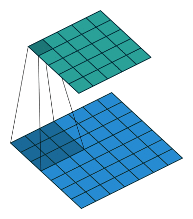

name: inverse layout: true class: center, middle, inverse --- # Advanced Theano ### Daniel C. LaCombe, Jr. <center> Ph.D. Candidate, Florida Atlantic University Brain Institute </center> <center> CTO, VoxelRx | Deep Learning Enthusiast </center> --- layout: false # Review * Theano Introduction * Tensors - Symbolic & Shared Variables * Basic Operations - (e.g, dot products) * Applying Gradients as Updates for Shared Variables * Intermediate Theano * Building Deep Neural Nets for Binary Classification * Initializing Weight and Bias Parameters * Activation Functions * Model Complexity --- # Today * We want to use Theano to solve real world problems that we can’t hard-code using machine learning * Solving these problems often require: * Quick iterations * _Crash as much and as quickly as possible_ * Creativity * Move from ~~excitement about learning the language~~ to _excitement about what the language can do for you_ * Intensive Code Maintenance * Branching out into new ideas can result in overly verbose code that is time consuming to modularize * In addition to introducing you to more complex topics for Theano, I would also like to share some thoughts on how to excel when doing advanced machine learning --- # More Functionality = More Problems * Different projects or improving existing ones usually leads to the need for more functionality * Code length explodes and is time-consuming to manage ___ Examples: * I want to implement a different weight initiation for this type of layer. * I'd like to constrain these weights in the following way. * I'd like to regularize my model with the following. * NIPS happens: Whoa this model is cool. I want this type of layer now. Why do all of this when somebody has already done _most_ of the work for us? --- # [Keras](https://keras.io/) _"[Keras] was developed with a focus on enabling fast experimentation. Being able to go from idea to result with the least possible delay is key to doing good research."_ - François Chollet Use Keras if you need a deep learning library that: * Allows for easy and fast prototyping (through total modularity, minimalism, and extensibility). * Supports both convolutional networks and recurrent networks, as well as combinations of the two. * Supports arbitrary connectivity schemes (including multi-input and multi-output training). * Runs seamlessly on CPU and GPU. .footnote[.red[*] Slide content taken directly from [project site](https://keras.io/)] ??? * Light-weight library but highly functional * Encapsulates most types of operations needed * Easily extensible * Multiple backends * Theano * TensorFlow * CNTK soon hopefully! * Huge community contributing so improves almost daily --- # Keras from a Theano Perspective Combines parameters and their operations into a `layer` object: ```python # the following in Theano: weights = theano.shared(np.random.rand(100, 784)) bias = theano.shared(np.zeros((784,))) output = theano.tensor.dot(input_, weights.T) + bias # is equivalent to the following in Keras: output = keras.layers.Dense(100)(input_) ``` ... and also automates numerous nuisance calculations (e.g., output shapes). --- # Keras - Layers ### Common Layers: * Dense * Convolutional * 1D -- Time Series * 2D -- Image * 3D -- Volumetric or Spatio-temporal * Pooling * Recurrent * Merge * Dropout * Normalization <!--  -->  --- # Keras - Functionality * Regularizers * weight decay / sparse activity * Constraints * non-negative / unit-norm * Objectives * cross-entropy / Kullback-Leibler divergence * Optimizers * stochastic gradient descent * Metrics * accuracy * Datasets * MNIST / CIFAR-10 * Pre-trained Models * ResNet / VGG-16 * Model History * loss function <!-- --- # Keras - Data Dimensionality ### Supports 1-3 Dimensional Data: * Time Series: * 1D-Convolutions - LSTM - GRU * Images * 2D-Convolutions / Dilated Convolutions * Spatiotemporal / Volumetric Data * 3D-Convolutions --> --- # Keras - Backends Keras supports both Theano and TensorFlow backends.red[*] and can be defined in the configuration file. ```json { "image_dim_ordering": "tf", "epsilon": 1e-07, "floatx": "float32", "backend": "tensorflow" } ``` To use Theano, the `"backend"` should be switched to `"theano"` and the `"image_dim_ordering"` should be swiched to `"th"`. .footnote[.red[*] Hopefully CNTK soon!] --- # Keras - Using the Backend Keras backend can be called in just like `theano.tensor`: ```python import numpy as np import keras.backend as K weights = K.variable(np.random.rand(100, 784)) # shared variables input_ = K.placeholder(ndim=2) # symbolic variables ``` Keras supports most Theano tensor functions, but unsupported operations can be separately imported and seamlessly incorporated into the code. --- # Theano - Using the GPU In order to either get Theano or Keras using an available GPU, the `device` in the `.theanorc` file must be set to `gpu`. ``` [global] floatX = float32 optimizer=None device = gpu ``` Assuming drivers and CUDA libraries have been installed, this should be enough to get your neural networks accelerated. More [here](http://deeplearning.net/software/theano/tutorial/using_gpu.html). --- template: inverse ## Keras Quick-Start --- # Keras Models ### Sequential * Easy interface * Fault tolerant * Low flexibility * Use for run-of-the-mill models ### Model (functional API) * Verbose interface * Fault intolerant * High flexibility * Use for more custom models --- # Keras Bare-Bones fAPI Example Using the functional API, Keras models can be easily built by defining the sequence of layers desired, passing the inputs and outputs to `Model`, and then compiling it. ```python from keras.models import Model from keras.layers import Input, Dense # define model architecture input_ = Input(shape=(784,)) hidden = Dense(100, activation='relu')(input_) output = Dense(10, activation='softmax')(hidden) # build model and compile model = Model(input=[input_], output=[output]) model.compile( optimizer='sgd', loss='categorical_crossentropy', metrics=['accuracy'] ) ``` This way of using Keras feels more Theano-like and allows for more flexibility in creating more complex graphs, such as multi-input and multi-output networks. --- # Keras Bare-Bones fAPI Example Training the above model to accurately classify hand-written digits is as easy as loading some data, applying preproecssing, and then passing it as well as some arguments to the `model.fit()` method. ```python from keras.datasets import mnist # load the data (x_train, y_train), (x_test, y_test) = mnist.load_data() # preprocess the data x_train, y_train = preprocess_data(x_train, y_train) x_test, y_test = preprocess_data(x_test, y_test) # fit model to the data model.fit( x=x_train, y=y_train, batch_size=32, nb_epoch=10, verbose=1, validation_split=0.3 ) ``` .footnote[__Note__: `preprocess_data()` is defined in the Jupyter notebook] --- # Pros and Cons of Using Keras ### Pros * More compact * Less coding * Easier to manage * Quicker ### Cons * Less access to lower-level API * Behind-the-scenes functionality might have unexpected effects * Sometimes feels a little hacky to customize --- template: inverse ## Common Pitfalls --- # Common Pitfalls - `Nan`s Theano's `nanguardmode` can be used to monitor where `Nan`s might be occurring in your model. These can be passed to either Theano functions or to the compile method of Keras models. ```python from theano.compile.nanguardmode import NanGuardMode model.compile( optimizer='sgd', loss='categorical_crossentropy', metrics=['accuracy'], mode=NanGuardMode(nan_is_error=True, inf_is_error=True, big_is_error=True) ) ``` Basic Guideline: * Avoid dividing by zero or taking logarithm of negative `x` by applying something like `K.maximum(x, K.epsilon())` --- # Common Pitfalls - OOM Errors __Out of Memory__ (OOM) Errors occur when the device (CPU or GPU) has run out of memory. This can be troubleshot by: * Lowering data dimensionality (e.g., downsampling, PCA) * Reduce number of parameters in model * In Keras: `model.summary()` will print a summary of the model and can pinpoint where in the model most of the parameters are * Reduce batch size --- template: inverse ## General Workflow --- # General Workflow -- Step 1 1) Build a Baseline Model * Use baseline architecture in literature * Save model, weights, and history for later evaluation and comparison ```python # save model history after fitting hist = model.fit(x, y) with open('model_history.txt', 'w') as save_file: json.dump(hist.history, save_file) save_file.close() # save model architecture, weights, and config model.save('my_model.h5') ``` --- # General Workflow -- Step 2 2) Build Better Models * These custom models can import the baseline model architecture and make modifications * e.g., add custom or additional layers while keeping # of parameters constant ```python # get base model input and output base_model = model_() base_model_input = base_model.input base_model.layers.pop(i=-1) # remove last layer base_model.layers.append(Activation('softmax')) # append softmax layer base_model.layers.insert(i=-2, Dense(10)) # insert dense layer # rebuild the model (also re-compile model -- not shown) model = Model(input=[base_model_input], output=[base_model.output]) ``` --- # Directory Structure ``` ProjectName ├──__init__.py ├── baseline_model/ | ├── __init__.py | ├── model.py | └── main_script.py | └── saved/ | | └── images/ | | └── models/ ├── custom_model/ | ├── __init__.py | ├── model.py | └── main_script.py └── utilities/ ├── __init__.py ├── data_utilities.py ├── network_utilities.py ├── visualization_utilities.py └── keras_custom.html ``` --- template: inverse ## Deployment --- # Deployment Machine learning models built in Keras can be deployed as web service using cloud computing with or without GPU capabilities. * Microsoft Azure * Flask * Docker --- # Basic Web Application ```python import numpy as np from keras.models import load_model from flask import Flask, request, jsonify model = load_model('my_model.h5') app = Flask(__name__) @app.route('/apis', methods=['POST']) def make_prediction(): # get data request, convert to Numpy, and preprocess (not shown) data = request.get_json(force=True) data = np.array(data, dtype='float32') # get model ouput and make prediction probabilities = model.predict(data) prediction = np.argmax(probabilities) return jsonify(results={'prediction': prediction}) if __name__ == '__main__': app.run(host='127.0.0.1', port=5000, debug=True) ``` --- template: inverse ## Thank you! -- Questions?